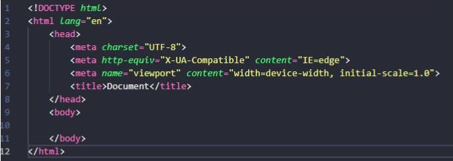

Antes de qualquer coisa, precisamos saber que existem as tags de abertura e as de fechamento. As de abertura se iniciam com o símbolo "<" seguido do nome da tag, e termina com o símbolo ">". Já as tags de fechamento, depois do símbolo inicial conterá uma barra "/", como podemos verificar na imagem mais abaixo.
Esta tag Doctype está localizada no Head, ressaltamos: naquela parte que não aparece para o usuário. Ela abre todo arquivo HTML, e tem como função informar qual tipo de linguagem será utilizada.
Como podemos verificar na imagem acima, a tag do Doctype tem o atributo html, que informa a linguagem que será utilizada.
Logo abaixo da tag Doctype, vemos a tag html que inicia e encerra todo o arquivo, e tem um atributo lang que traz o idioma que será utilizado, no caso, o inglês, então informamos "en" (english). Podemos ter também "pt-br" (português-Brasil), ou outro idioma que for utilizar.
Já dentro do Head encontramos as tags meta, que informam o tipo de caracteres que serão utilizados, a compatibilidade e as informações sobre a visualização inicial.
Não precisa se preocupar em decorar essa estrutura, pois, se estiver utilizando um editor, como o VSCode, poderá dar um comando simples e ele já cria essa estrutura. Esse comando é o "html:5" + enter.
Olhe para parte superior do navegar e verá que cada página que é aberta tem uma pequena "aba" com um nome da página. Esse nome é inserido através da tag Title. Na imagem acima, localize a tag Title e verá escrito "Document"; esse texto é o que constará na aba da página daquele código, assim como nesta página está escrito na aba "Tags do Head".
Legal isso, não é mesmo!? Começar a ver que um código em HTML tem alguma função prática e que conhecemos, e agora sabemos como é que é feito para essa parte da página aparecer.
Agora que já conheceu as tags do Head, pode voltar à página inicial ou avançar em seus conhecimentos indo para a próxima página onde vamos conhecer as Tags do Body, que nos permite adicionar o texto, os links, as listas, e as demais coisas que formam a nossa página Web.